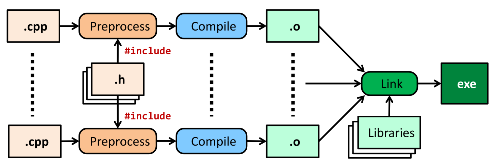
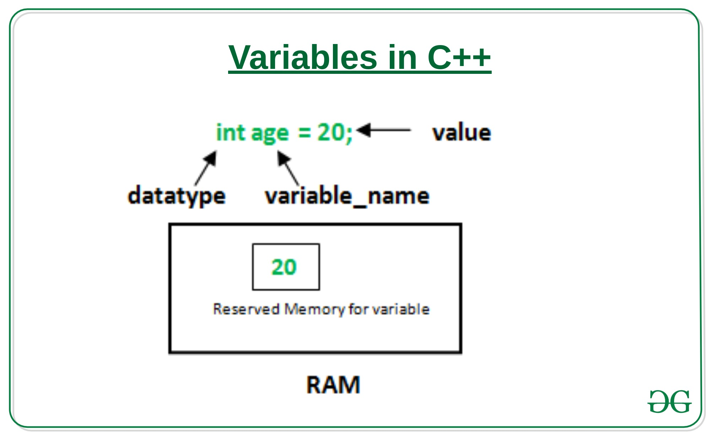
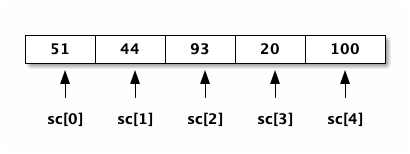
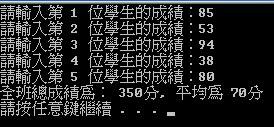
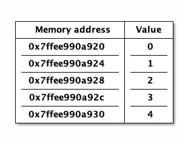

Basic Materials of C++
Table of Contents

1. Reasons Why You Should Learn Code in 2023
Helping Others1:
By learning how to code, you can use your skills to help people in your own unique way.
Figure 1: 口罩地圖
- In-Demand Skills
Many employers are increasingly looking for skilled coders who can develop software and applications that meet their needs. Not only does this create more job opportunities for coders, but it also gives them more power to negotiate salaries and perks. - Higher Earning Potential
Coding skills are becoming more in-demand and sought after by employers, allowing those with coding skills to demand higher wages than those without. - Increased Problem-Solving Skills
Learning to code is a great way to increase your problem-solving skills. Computer programming requires you to think logically, develop solutions, and solve complex problems. Plus, coding can help improve your ability to analyze and interpret data. This is useful for any type of work that requires interpreting large amounts of data, such as analytics or machine learning. - Improved Communication Skills
Learning to code can drastically improve your communication skills. Being able to explain and communicate complex ideas in an effective and concise manner is a key skill in many industries. Moreover, coding provides you with a mental framework for breaking down and solving problems. This helps you learn how to think critically and analyze situations in order to come up with the best solution.
2. 程式的編寫與執行
2.1. source code
所謂的程式碼基本上都只是一些文字檔，只是這些文字的撰寫是依照不同語言(如 C、C++、Python、R…)所規定的語法(syntax)來撰寫，以達到特定目的。
2.2. 編寫
既然程式碼只是文字檔，所以，其實我們可以很單純的以 windows 的記事本或是 MacOS 中的 TextEdit 來編寫各種語言的程式碼，只是，使用這些應用程式來編寫程式會相對辛苦，因為相對於一些專用的應用程式如 DevC++、VSCode、PyCharm 等都會提供撰寫者許多的額外功能，例如即時除錯、自動縮排、自動補完(auto complete)，甚至是後續的編譯、執行..。
2.3. 編譯與執行
既然寫完的程式碼只是文字檔，那這些文字檔要如何變成可以執行的執行檔呢？
如下圖2所示：

Figure 2: C++ Build Model
程式碼必須先經過 Preprocessing、Compilation、Linking 等步驟才能成為一支可以執行的執行檔(如 Windows 下的.exe 或是 MacOS 下的.app)。
2.4. 幾種寫程式的環境
3. C++基本架構
1: #include <iostream> 2: using namespace std; 3: 4: int main() 5: { 6: cout << "Hello world\n"; 7: return 0; 8: }
Hello world
3.1. main()
C/C++的程式由許多的 function(函式)組成，function 的基本架構如下：
傳回值類型 函式名稱() { 函式內容 retrun 傳回值 }
前述程式中的第4行開始即為一名為 main 的 function，這也是 C/C++程式最主要的一支 function，程式被執行時，就由整支程式中找出名為 main 的 function 開始執行。之後我們的程式也將依序寫在這組大括號中。
3.2. 標頭檔(Headers)
上述程式中，第1行為標頭檔(Header)的引入，這裡告訴 Compiler 說我需要用到 iostream 這個 header，原因是程式的第6行用到 cout 這個指令，而這個指令就被定義在 iostream 這個 header 中，其中的 io 即代表 input/output。
往後如果用到其他函數，也需要 include 相關的 header，例如，如果需要用到數學的開根號函式 sqrt()，就需要 include math.h 這個 header，如下例中的第1行。
1: #include <iostream> 2: #include <math.h> 3: using namespace std; 4: 5: int main() 6: { 7: cout << sqrt(100) << endl; 8: return 0; 9: } 10:
10
3.3. 命名空間(namespace)
一支程式往往會用到許多的指令、函式、變數，不同單位所開發的程式也許會用到相同的名稱來為這些函式或變數命名，如此一來就可能導致名稱的衝突。舉個例子，在一年級新生中，有三個班級裡都有個叫*陳宜君*的同學，那麼我們怎麼區分這三位同學呢？一個方式在提及這些同學時在前面加上班級，如：一年三班的陳宜君。
C++就提出這種方式來解決名稱可能衝突的問題，以下面程式為例：
1: #include <iostream> 2: int main() { 3: std::cout << "每次用到cout都指定namespace"; 4: return 0; 5: }
每次用到 cout 都指定 namespace
上例的第3中的 std::就是 C++的標準命名空間，用來說明這裡所用的 cout 是 C++預設的指令，但是如果你並沒有命名衝突的問題，其實可以一開始就直接把 namespace 設定為 std，如下面程式中的第2行。
1: #include <iostream> 2: using namespace std; 3: int main() { 4: cout << "用到cout時不用再特別指定namespace"; 5: return 0; 6: }
用到 cout 時不用再特別指定 namespace
有關於 namespace 的詳細說明，可參考簡介名稱空間以及Use a function in different file and different namespace in Visual C++這兩篇文章。
4. 輸出
顧名思意，輸出是將資料輸出到某種設備（如螢幕、印表機…）, 常見的輸出指令有 cout、printf()、puts()、putchar()等。
4.1. cout
cout 為 iostream 這個類別(class)的 object3，所以程式中若使用到 cout 就必須 include iostream。cout 可以將文字資料與變數資料列印在螢幕上，在語法上會使用<<作為文字與變數之間的連接工具，若要換行則使用“\n”或是關鍵字 endl4。
如果要輸出的是文字資料，則應該在文字的前後各加上英文的雙引號(")，如下列程式的第4行，不同類型的數值資料間要以<<間隔。
1: #include <iostream> 2: using namespace std; 3: int main() { 4: cout << "Hello world\n"; 5: cout << "半徑：" << 3 << endl; 6: cout << "圓面積：" << 3*3*3.1416 << "\n"; 7: return 0; 8: }
Hello world 半徑：3 圓面積：28.2744
4.2. printf()
printf()為定義在 stdio.h 中的一個 function，所以若用到 printf()就要 include stdio.h。
和 cout 一樣，printf()一樣是用來進行資料的輸出，只是在輸出時提供了更多的格式選定選項。基本的應用如下例，更複雜的應用則在介紹完變數(vairalbe)概念後再行說明。
1: 2: #include <stdio.h> 3: using namespace std; 4: int main() { 5: printf("Hello world\n"); 6: printf("半徑：%d\n", 3); //%d表示在該處要顯示/輸出一個整數 7: printf("圓面積：%.2f\n", 3*3*3.1416); //%.2f: 表示在該處要顯示/輸出一個小數，精確度達到小點點後第二位 8: return 0; 9: }
Hello world 半徑：3 圓面積：28.27
- float v.s. double
在 C++ 中，使用 printf() 函數輸出 double 或 float 變數時，可以使用格式化字符串指定輸出的格式。對於 float 和 double 變數，常用的格式化符號是 %f 或 %lf。
- %f：用於輸出 float 或 double 型別的變數。
- %lf：雖然在 C 語言中 %lf 是用來輸出 double 的格式，但在 C++ 的 printf() 函數中，%f 和 %lf 是等效的，因為 printf() 不區分 float 和 double，它們都會被轉換為 double 進行處理。
1: #include <iostream> 2: 3: int main() { 4: float a = 3.14159f; 5: double b = 2.718281828459; 6: 7: // 使用 printf() 輸出 float 和 double 8: printf("float 變數 a = %f\n", a); 9: printf("double 變數 b = %f\n", b); 10: 11: // 限制小數點後兩位 12: printf("float 變數 a (兩位小數) = %.2f\n", a); 13: printf("double 變數 b (兩位小數) = %.2f\n", b); 14: 15: return 0; 16: }
- %f：用於輸出 float 或 double 型別的變數。
4.3. 跳脫字元
如果你試過利用 C++來輸出下列這段話：
他說：“好”，然後他就死了。
你會發現這是件困難的事，在前節的 cout 中，我們提及雙引號是用來將文字括起來的符號，若在字串中也出現雙引號，則勢必會打亂雙引號在文字中的規則。要輸出這類特殊字元的問題，有以下兩種方法：
- cout + 單引號
以兩個單引號將雙引號括起來，如下列程式。
1: #include <iostream> 2: using namespace std; 3: int main() { 4: cout << "他說："<< '"' << "好" << '"' << "，然後他就死了。\n"; 5: }
他說："好"，然後他就死了。
- 加上跳脫字元
即，在字串中的雙引號前加上\，變成\"，如下
1: #include <iostream> 2: using namespace std; 3: int main() { 4: cout << "他說：\"好\"，然後他就死了。\n"; 5: }
他說："好"，然後他就死了。
常用的跳脫字元還有以下幾類：
字元 意義 \’ 單引號 \" 雙引號 \\ 反斜線 \0 空字元(NULL) \t 定位字元(TAB) \n 換行字元(ENTER)
5. Variable
5.1. 關於變數
A variable is a name given to a memory location. It is the basic unit of storage in a program5.
- The value stored in a variable can be changed during program execution.
- A variable is only a name given to a memory location, all the operations done on the variable effects that memory location.
- In C++, all the variables must be declared before use.
5.2. 變數的宣告與應用
變數是資料的標籤，而非資料本身。電腦程式很大一部分是在操作資料，變數在本質上是用來操作資料的一種語法特性。6

Figure 3: Variables in C++
C 語言的變數宣告語法如下：
變數類型 變數名稱[=初值];
以下列程式為例，第4行宣告了一個名為 r 的整數型態(int)變數，這意謂著向記憶體要了塊足以儲存整數資料的空間，並將之命名為 r，並在第6將整數 5 存入這個空間中，爾後只要在程式中提及 r，指的便是 5 這個值。這裡的等號運算子其作用為指定(assign)，即是將等號*右邊*的值存入等號*左邊*的變數(空間)中。
在第5行宣告了一個名為 cirArea 的小數變數，接下來在第7行先計算出圓面積的值，再把這個值存入這個小數變數空間中。
1: #include <iostream> 2: using namespace std; 3: int main() { 4: int r; 5: double cirArea; 6: r = 5; 7: cirArea = r * r * 3.1416; 8: cout << "圓面積：" << cirArea << endl; 9: }
圓面積：78.54
5.3. 變數的命名規則
- 可用字母、數字、底線。
- 第一個字不可為數字，如 1x, 2x…，可以為 x1, x2…。
- 名稱間不可有空白。如 student no，可以 student_Id 或是 studentId 取代。
- 大小寫有別(Case-Sensitive): a 與 A 為兩個不同的變數。
- 不可使用關鍵字(如 int, double, if, while…)。
- 底線開頭接大寫字母應保留給系統使用。
更詳細的命名規範與建議可參閱：C語言中變數名及函式名的命名規則與駝峰命名法。
5.4. 變數類型
前節介紹了變數的宣告要先說明其類型，根據要儲存的資料種類不同，C++變數有許多型態。以下是一些常用的基本型態7：
| 型態 | 中文意思 | 英文字義 | 可儲存的資料 |
| int | 整數 | Integer | 100、-5、1246 … |
| float | 32 bit 單精浮點數(小數) | single precision floating point | 3.14159、4.3、-1.1 … |
| double | 64 bit 倍精浮點數(小數) | double precision floating point | 3.14159、4.3、-1.1 … |
| char | 字元(半形字) | Character | ’a’、’R’、’1’、’@’、’*’ … |
| string | 字串(文句) | String | “Hello”、“^_^”、“Rock!” … |
| bool | 布林(是非) | boolean | true、false |
關於 float 與 double 的進一步說明，可參閱：float跟double小知識。
5.5. 變數的極限
- 範例
1: #include <iostream> 2: #include <float.h> 3: using namespace std; 4: int main() { 5: cout << INT_MIN << endl; 6: cout << INT_MAX << endl; 7: cout << LONG_MIN << endl; 8: cout << LONG_MAX << endl; 9: cout << DBL_MIN << endl; 10: cout << DBL_MAX << endl; 11: }
-2147483648 2147483647 -9223372036854775808 9223372036854775807 2.22507e-308 1.79769e+308
- 詳細內容：
6. 輸入
6.1. 變數的輪入
前節提及變數的宣告、指定內容以及輸出變數，然而在程式內容中指定變數值實在很沒有彈性，我們可以透過輸入(cin)的方式將指定變數值的時機延後到程式執行時，由使用者來指定，例如：
1: #include <iostream> 2: using namespace std; 3: int main() { 4: double r; 5: double area; 6: cin >> r; 7: area = r * r * 3.14; 8: cout << "半徑 " << r << "的圓，其面積為: " << area << "\n"; 9: }
程式在執行至第6行中的 cin 時會暫停，等待使用者自鍵盤輸入一數值，並將該數值存入變數 r 中，接下來再以這個 r 來計算圓面積(第7行)，最後輸出其面積。
7. 運算式
7.1. 指定運算
最基本的運算子為=(assign)，即，將資料(數值、字元或字串)存入某變數空間中，如:
1: #include <iostream> 2: using namespace std; 3: int main() { 4: int x, y, z; 5: x = 3; 6: y = 4; 7: z = x + y; 8: cout << z << endl; 9: x = 10; 10: z = x + y; 11: cout << z << endl; 12: } 13:
7 14
指定運算除了可以將其他變數的計算結果存入變數中(如上述程式中的第7、10行)外，也可以將變數本身的值再運算後存回來，如：
1: #include <iostream> 2: using namespace std; 3: int main() { 4: int x; 5: x = 3; 6: cout << x << endl; 7: x = x + 1; 8: cout << x << endl; 9: x++; // 同x = x + 1 10: cout << x << endl; 11: x = x * 3; 12: cout << x << endl; 13: } 14:
3 4 5 15
如同5.2所述:
等號運算子其作用為指定(assign)，即是將等號*右邊*的值存入等號*左邊*的變數(空間)中
，上述程式中的第7行是先求出 x+1 的值(4)，再將這個值存回變數 x 中，這個運算也可以第9取代；同理，程式中的第11行是先將 x 的值乘以 3，再把結果存回變數 x 中。
7.2. 數值運算
C/C++的基本數值運算有+、-、*、/、%，最後的%為取餘數。
1: #include <iostream> 2: using namespace std; 3: int main() { 4: int x = 10, y = 3; 5: cout << x + y << endl; 6: cout << x - y << endl; 7: cout << x * y << endl; 8: cout << x / y << endl; 9: cout << x % y << endl; 10: }
13 7 30 3 1
此處須留意的是第8行的值為整除的結果(得到商)，因為 x 與 y 均為整數，故此處的/為整除；此外，第9的%運算僅能用於 x 與 y 均為整數的狀況，在 C/C++中，小數不允許有取餘數的運算(python 可以)。
數除運算也可以結合小括號來進行更複雜的運算，如：
1: //... 2: int t = 10; 3: double up = 10.3; 4: double bt = 20.4; 5: double height = 15; 6: double area; 7: area = ((up + bt) * height / 2) * 10; 8: // ...
此處須留意，小刮號可以層層相叠，但不能像數學式那樣最內層為小括號、然後是中刮號、大刮號…
- 進階運算
C++也提供一些較複雜的數學運算如開根號、log、或是 sin、cos 等，但使用時必須 include 函式庫(math.h)
- 開根號
1: #include <iostream> 2: #include <stdio.h> 3: #include <math.h> //一定要匯入 4: using namespace std; 5: 6: int main() { 7: int n; 8: double ans; 9: n = 10; 10: ans = sqrt(n); 11: cout << ans << endl; 12: printf("%.2f\n", ans); 13: }
3.16228 3.16
- 開根號
7.3. 關係運算
即，比較兩個值(或運算式)的結果，可的關係運算子如下：
| 關係運算子 | 意義 | 使用範例 | 範例運算結果 |
| == | 等於 | 1+1 == 2 | 1 |
| != | 不等於 | 3 != 4 | 1 |
| > | 大於 | 5 > 7 | 0 |
| >= | 大於等於 | 3 >= 5 | 0 |
| < | 小於 | 2 < 6 | 1 |
| <= | 小於等於 | 8 <= 8 | 1 |
7.4. 條件運算
上述關係運算所得的條件值(true/false)也可以再進行運算，而運算的結果也只有兩類: true/false。最基本的條件運算有以下三項：
- &&, and
且，只有在兩項條件均成立時其運算結果才是 true，否則其結果為 false，如
1: #include <iostream> 2: using namespace std; 3: int main() { 4: int x = 3; 5: int y = 4; 6: cout << (x >= 3 && y >= 0) << endl; 7: cout << (x == 3 && y > 4) << endl; 8: }
1 0
- ||, or
1: #include <iostream> 2: using namespace std; 3: int main() { 4: int x = 3; 5: int y = 4; 6: cout << (x >= 3 || y < 0) << endl; 7: cout << (x != 3 && y > 14) << endl; 8: }
1 0
- !, not
1: #include <iostream> 2: using namespace std; 3: int main() { 4: int x = 3; 5: int y = 4; 6: cout << !(x >= 3) << endl; 7: cout << !(x == 3 && y > 4) << endl; 8: }
0 1
如果數值運算，條件運算也結合小刮號進行更複雜的計算。
8. if 條件判斷
if 判斷式可用來判斷條件是否成立，並且依照條件之成立與否，來執行不同的程式碼8。依照條件的複雜程度可大致分為以下三類：
8.1. 單一條件
8.2. 條件運算(條件的組合)
在前節的範例中，我們看到的是最簡單的條件，如
1: if (score >= 60) { 2: ... 3: }
然而，更多時候我們要處理的是多種條件的組合，例如：輸入一分數，若所輸入的分數不合理(大於 100 或小於 0)，則輸出“請重新輸入”。雖然我們可以利用以下的寫法來解決問題：
1: #include <iostream> 2: using namespace std; 3: int main() { 4: int score; 5: score = -19; 6: if (score < 0) { 7: cout << "請重新輸入\n"; 8: } 9: if (score > 100) { 10: cout << "請重新輸入\n"; 11: } 12: }
但更適合的是利用條件運算來處理問題，如下：
1: #include <iostream> 2: using namespace std; 3: int main() { 4: int score; 5: score = -19; 6: if ((score < 0) || (score > 100)) { 7: cout << "請重新輸入\n"; 8: } 9: }
請重新輸入
上述的||即為條件運算子，代表 OR。
C++的條件運算子列表如下：
| 運算子 | 名稱 | 範例 | 說明 |
| && | AND | ( 條件 1 && 條件 2) | 當條件 1、2 皆成立時才算成立 |
| || | OR | ( 條件 1 || 條件 2) | 只要條件 1、2 有一項成立就算成立 |
| ! | Not | !（條件 1) | 當條件 1 不成立時就成立 |
8.3. 雙重條件
- 語法
若條件的可能性可分為兩類，則可使用如下 if..else..的條件式，即:
- 當條件成立，則執行程式碼一，
- 否則(若條件不成立)，則執行程式碼二。
if (條件) { 程式碼一; } else { 程式碼二; }
- 當條件成立，則執行程式碼一，
- 範例
若分數及格，則輸出 PASS，否則輸出 FAIL
1: #include <iostream> 2: using namespace std; 3: int main() { 4: int score; 5: score = 57; 6: if (score >= 60) { 7: cout << "PASS\n"; 8: } else { 9: cout << "FAIL\n"; 10: } 11: }
FAIL
- 課堂練習
8.4. 巢狀條件
上節中提及若 if 後的件條成立，則執行大括號中的程式碼，此段程式碼也可以是 if 條件本身，如：
- 語法
if (條件1) { 程式碼...; if (條件2) { 程式碼...; } 程式碼...; } else { 程式碼...; }
- 範例
1: #include <iostream> 2: using namespace std; 3: int main() { 4: int pass; 5: cin >> pass; 6: bool userIsAdmin = true; 7: if (pass == 1234) { 8: if (userIsAdmin == true) { 9: cout << "管理者，有root權限"; 10: } else { 11: cout << "為一般使用者，權限有限"; 12: } 13: } else { 14: cout << "輸入密碼錯誤"; 15: } 16: }
- 課堂練習
8.5. 多重條件
- 語法
- 當要判斷的條件可能性超過兩種，則可以用如下的 if..else if..條件式，即，
- 當條件一成立，則執行程式碼一；
- 若條件一不成立，則繼續判斷條件二，若條件二成立，則執行程式碼二；
- 若條件二也不成立，則繼續判斷條件三…依此類推。
- 最後的 else(第else行則可有可無，若有，則表示如果以上所有條件皆不成立，則執行程式碼 N。
if (條件一) { 程式碼一; } else if (條件二) { 程式碼二; } else if (條件三) { 程式碼三; } ... { } else { (else) 程式碼N }
- 當要判斷的條件可能性超過兩種，則可以用如下的 if..else if..條件式，即，
- 範例
將分數轉成等第(A, B, C…)
1: #include <iostream> 2: using namespace std; 3: int main() { 4: int score = 79; 5: if (score >= 90) { 6: cout << "A\n"; 7: } else if (score >= 80) { 8: cout << "B\n"; 9: } else if (score >= 70) { 10: cout << "C\n"; 11: } else if (score >= 60) { 12: cout << "D\n"; 13: } else { 14: cout << "F\n"; 15: } 16: }
C
9. For Loops
計算機的優勢除了運算速度之快，更重要的是它十分適合拿來做一些重複性極高的工作，例如，幫所有同學計算月考平均、幫全國所有家庭計算須繳所得稅….，For 迴圈即是許多語言用來執行重複工作的指令。
9.1. 語法 1 (要重複的程式碼只有一行時)
1: for (初始值; 條件式; 更新值) 程式碼;
9.2. 語法 2 (要重複一行以上程式碼時)
1: for (初始值; 條件式; 更新值){ 2: 程式碼一; 3: 程式碼二; 4: ... 5: }
初始值 是進入迴圈一開始會執行的動作，而 更新值 則是執行完每次的迴圈要執行的動作，至於重複的次數則取決於 條件式 是否成立，只要 條件式 一直成立(其計算結果為 true)，則持續重複執行程式碼；所以要利用 更新值 來逐步修正，讓條件值有機會傳回 false。
9.3. 範例
1: #include <iostream> 2: using namespace std; 3: 4: int main() { 5: for (int i = 1; i < 10; i++) { 6: cout << "3 * " << i << " = " << 3*i << endl; 7: } 8: return 0; 9: }
3 * 1 = 3 3 * 2 = 6 3 * 3 = 9 3 * 4 = 12 3 * 5 = 15 3 * 6 = 18 3 * 7 = 21 3 * 8 = 24 3 * 9 = 27
以上述程式為例，其程式執行的步驟如下：
9.4. 練習
- 輸入 n，輸出所有小於 n 的偶數．
- 輸入 n，輸出所有小於 n 且可被 17 整除的數．
- 輸入一數 N，輸出 1+2..+N
9.5. 旗標變數
有時我們希望能在迴圈的過程中判斷「某事是否曾發生過」，例如，「是否曾發現某數的因數？」、「連續輸入 N 個分數，判斷這 N 個分數中是否至少有一科不及格？」這是我們的思考方式就要稍做轉變。
- 例題
小明買了 N 張單碼彩卷，問是否全部摃龜，若這 N 張彩卷中至少有一張中奬(號碼=77)，則輸出“NOT BAD”，否則輸出“QQ”。
- 想法 1
面上述要求，for 迴圈的初學者可能會想在 for 中直接判斷中奬與否，如下:
1: #include <iostream> 2: using namespace std; 3: int main() { 4: int n; 5: cin >> n; 6: int x; 7: for (int i = 1; i <= n; i++) { 8: cin >> x; 9: if (x == 77) { 10: cout << "NOT BAD\n"; 11: } else { 12: cout << "QQ\n"; 13: } 14: } 15: }
QQ NOT BAD QQ
由上述結果可以發現，這並不是正確答案，很顯然應該把輸出判斷放在 for 的後面，那，要如何做到這點呢？
- 想法 2
另一種做法是，我們可以在 for 裡去計算中奬的次數，等到全部輸入完畢後，最後再統計一共有幾張中奬，這樣就可以解決上述問題：
1: #include <iostream> 2: using namespace std; 3: int main() { 4: int n; 5: cin >> n; 6: int x; 7: int numOfWins = 0; 8: for (int i = 1; i <= n; i++) { 9: cin >> x; 10: if (x == 77) { 11: numOfWins++; 12: } 13: } 14: if (numOfWins > 0) { 15: cout << "NOT BAD\n"; 16: } else { 17: cout << "QQ\n"; 18: } 19: }
NOT BAD
回顧一下這個做法，其實我們會發現我們到最後根本不在乎有幾張彩卷中奬，我們只在乎有沒有中過奬，即，對我們而言，numOfWins 其實只有兩種值:
- 0
- 大於 0
既然如此，其實以 boolean 變數來表示它會更為恰當。
- 0
- 想法 3
1: #include <iostream> 2: using namespace std; 3: int main() { 4: int n; 5: cin >> n; 6: int x; 7: bool iWin = false; 8: for (int i = 1; i <= n; i++) { 9: cin >> x; 10: if (x == 77) { 11: iWin = true; 12: } 13: } 14: if (iWin) { 15: cout << "NOT BAD\n"; 16: } else { 17: cout << "QQ\n"; 18: } 19: }
NOT BAD
這裡的 iWin 就是典型的 Flag variable。
10. Nested For Loop
10.1. 語法
1: for (初始值1; 條件式1; 更新值1) { 2: ... 3: for (初始值2; 條件式2; 更新值2) { 4: 程式碼一; 5: 程式碼二; 6: ... 7: } 8: ... 9: }
10.2. 範例
11. While
11.1. While
- 語法
1: while( 條件式1 ) { 2: 程式碼1; 3: 程式碼2; 4: }
while 與 for 均為重複結構，比較起來，while 的語法結構更為簡單，但撰寫者要自行處理的事也更多一些。上述語法的執行流程為:
- 若 while 後的 條件 1 成立，則執行一次大括號內的所有程式碼
- 回到 1.
由上述結構也可以看出，我們必須想辦法讓 條件 1 有機會不成立，否則這個 while 迴圈就會一直重複下去。
- 若 while 後的 條件 1 成立，則執行一次大括號內的所有程式碼
- 範例 1
以 while 模擬 for loop
1: ##include <iostream> 2: using namespace std; 3: int main(int argc, char *argv[]) { 4: int i; 5: 6: while (i<= 5) { 7: cout << "This is a while test\n;" 8: i++; 9: } 10: 11: return 0; 12: }
- 範例 2
九九乘法表
1: #include <iostream> 2: using namespace std; 3: 4: int main() { 5: int i = 9; 6: while (i > 0) { 7: cout << "3 * " << i << " = " << 3*i << endl; 8: i--; 9: } 10: return 0; 11: }
3 * 9 = 27 3 * 8 = 24 3 * 7 = 21 3 * 6 = 18 3 * 5 = 15 3 * 4 = 12 3 * 3 = 9 3 * 2 = 6 3 * 1 = 3
- 課堂練習
- 輸入一整數 n，輸出\(\)\(\sum{n}\)，以 while 完成。
- 輸入一整數 n，輸出\(\)\(\sum{n}\)，以 while 完成。
11.2. 不固定次數的重複
有些時候你想重覆執行某些動作，但是你又不確定會重覆多少次，典型的例子是輸入密碼，輸入錯誤後就應該重新輸入，作為系統設計者，你不會知道使用者會在第幾次輸入正確密碼，這就是 while 適合上場的時機….，例如:
1: 輸入密碼; 2: while(密碼錯誤) 3: { 4: 輸入密碼; 5: }
11.3. Do … while
有些狀況下，重複的次數 至少 要發生一次才行，例如前節中的密碼檢查，使用者至少要先輸入一次密碼，接下來系統才能針對密碼進行驗證，此時，do..while 會是一個比較理想的重複架構，其語法如下：
1: do { 2: 輸入密碼 3: } while (密碼錯誤);
比起前一節的 while，是不是更為精簡了呢….
12. Array
直至目前為止，我們學過宣告變數來儲存數值(int, double)，如果今天要計算全班資訊科成績平均(5 人)，也許我們可以用如下方式來計算:
1: int main(int argc, char *argv[]) { 2: int cs1, cs2, cs3, cs4, cs5; 3: std::cin >> cs1 >> cs2 >> cs3 >> cs4 >> cs5; 4: 5: double avg; 6: avg = (cs1 + cs2 + cs3 + cs4 + cs5) / 5.0; 7: 8: std::cout << avg << endl; 9: return 0; 10: }
but….如果全班有 50 個人呢？如果是要求全校的成績分佈呢?
各種程式語言為了因應這種大批資料的處理計算，都會有相對應的資料結構，C++的陣列(array)就是用來儲存大量資料的結構。
12.1. 基本操作
- 宣告
如果變數一樣，array 也要先宣告才能使用，其宣告方式如下：
1: 資料型態 名稱[長度];
其中陣列長度必須為一編譯時期的常數，例如:
1: int number[10]; // 宣告 10 個元素的整數陣列 2: double score[10]; // 宣告 10 個元素的浮點數陣列 3: char ascii[10]; // 宣告 10 個元素的字元陣列
或是
1: int numOfStudent; 2: cin >> numOfStudent; //先確認人數 3: int score[numOfStudent];
- Assign value to Array
- assign
1: int sc[5]; 2: sc[0] = 51; 3: sc[1] = 44; 4: sc[2] = 93; 5: sc[3] = 20; 6: sc[4] = 100;
上述程式的執行結果如下所示：

Figure 4: 陣列儲存值(value)與 index 的關係
如上所示，宣告一陣列 sc，每個 int 並列儲存於陣列中，以 index 值(0~4)做為存取依據，因為 index 值為連續整數，所以我們可以很方便的套用 for-loop 來存取陣列內容,例如：
1: for (i = 0; i < 5; i++) { 2: cout << sc[i] << endl; 3: }
- 宣告時順便指定陣列初值
1: int score[5] = {51, 44, 93, 20, 100};
- cin
1: int sc[5]; 2: for (i = 0; i < 5; i++) { 3: cin >> sc[i]; 4: }
- 課堂練習
- 先輸入全班人數 N，接下來輸入 N 位學生的成績，存入一維陣列中，計算總分、平均。已知學生人數不超過 50 人。執行畫面需如下所示：

- 輸出上例中全班人數最高分之分數。
- 可以直接複製貼上以下的測資
5 85 53 94 38 80
- 先輸入全班人數 N，接下來輸入 N 位學生的成績，存入一維陣列中，計算總分、平均。已知學生人數不超過 50 人。執行畫面需如下所示：
12.2. 其他類型的陣列
1: char ascii[5] = {'A', 'B', 'C', 'D', 'E'}; //字元陣列 2: bool flag[5] = {false, true, false, true, false};
12.3. 更方便的 for array
C++ 11 提供了 for range 語法，可用於循序走訪陣列的任務
1: #include <iostream> 2: using namespace std; 3: 4: int main() { 5: int number[5] = {0, 1, 2, 3, 4}; 6: 7: for(auto n : number) { 8: cout << n << " "; 9: } 10: cout << endl; 11: 12: return 0; 13: }
0 1 2 3 4
12.4. index 為何由 0 開始?
陣列索引值由 0 開始不是沒有原因的，陣列名稱儲存了陣列記憶體的首個位置的位址，我們可以由底下的程式碼看出陣列開頭的位址：
1: #include <iostream> 2: using namespace std; 3: 4: int main() { 5: int number[5] = {0, 1, 2, 3, 4}; 6: 7: cout << begin(number) << endl; 8: 9: return 0; 10: }
0x7ffee990a920
此時，索引值表示陣列元素是相對於陣列首個記憶體位址的位移量（offset），位移的量與資料型態長度有關，如果是 int 整數，每次位移時是一個 int 整數的長度，例如在上例中 number[0] 索引值為 0 時，表示位移量為 0，自然就是指第一個元素，而 number[9] 就是指相對於首個元素的位移量為 9。9
- 觀察程式執行結果，你有看出來一個 int 會佔用多大的空間嗎？
- 請你複製這段程式碼，將 int 改為 double，再看看一個 double 會佔用多少空間？
- 你要如何測試 char, boolean 的佔用空間？
1: #include <iostream> 2: using namespace std; 3: 4: int main() { 5: int number[5] = {0, 1, 2, 3, 4}; 6: 7: for(auto offset = begin(number); offset != end(number); offset++) { 8: auto n = *offset; 9: cout << offset << ": " << n << endl; 10: } 11: cout << endl; 12: 13: return 0; 14: }
0x7ffee990a920: 0 0x7ffee990a924: 1 0x7ffee990a928: 2 0x7ffee990a92c: 3 0x7ffee990a930: 4
上述程式中的 offset 為指標變數，其型代為 int*，代表記憶體的位址，若要取得該位址中的值，則以*offset 表示。若以圖形表示則為：

Figure 5: 陣列的記憶體位址(address)與儲存值(value)對照圖
12.5. YES/NO for Array
- what you should not do with array
對一般變數，我們可以用以下 assign 方式將其值 assign 給其他變數：
1: int a = 20; 2: int b; 3: b = 20;
但是 array 不允許上述操作，如：
1: int ary1[5] = {0, 1, 3, 4, 5}; 2: int ary2[5]; 3: ary2 = ary1; //錯誤!!
如果要將某一陣列指定給另一個變數，只能透過迴圈逐一 assign:
1: int ary1[5] = {0, 1, 3, 4, 5}; 2: int ary2[5]; 3: for (i = 0; i < 5; i++) { 4: ary2[i] = ary1[i]; 5: }
- what you can do with array:
- sort #1
1: #include <algorithm> 2: #include <iostream> 3: using namespace std; 4: int main() { 5: int number[] = {30, 12, 55, 31, 98, 11}; 6: // 排序寫法1 7: sort(begin(number), end(number)); 8: for (int i = 0; i <= 5; i++) { 9: cout << number[i] << ","; 10: } 11: }
11,12,30,31,55,98,
- sort #2
1: //輸入: 30 11 13 100 8 2: #include <algorithm> 3: #include <iostream> 4: using namespace std; 5: int main() { 6: int number[20]; 7: for (int i = 0; i < 5; i++) { 8: cin >> number[i]; 9: } 10: // 排序寫法2 11: sort(number, number + 5); 12: 13: for (int i = 0; i < 5; i++) { 14: cout << number[i] << ","; 15: } 16: }
8,11,13,30,100,
- find
1: #include <algorithm> 2: #include <iostream> 3: using namespace std; 4: int main() { 5: int number[] = {30, 12, 55, 31, 98, 11}; 6: 7: cout << "輸入搜尋值："; 8: int search = 0; 9: cin >> search; 10: 11: int* addr = find(begin(number), end(number), search); 12: cout << (addr != end(number) ? "找到" : "沒有") 13: << "搜尋值" 14: << endl; 15: }
- reverse
1: #include <algorithm> 2: #include <iostream> 3: using namespace std; 4: int main() { 5: int number[] = {30, 12, 55, 31, 98, 11}; 6: // 反轉 7: reverse(begin(number), end(number)); 8: }
12.6. 2d array
- initialization
1: #include <iostream> 2: using namespace std; 3: int main() { 4: int i, j; 5: float grad[3][5]; 6: memset(grad, 0, sizeof(grad)); 7: 8: for (i = 0; i < 3; i++) { 9: for (j = 0; j < 5; j++) { 10: cout << grad[i][j] << ", "; 11: } 12: cout << endl; 13: } 14: 15: int x[5] = {0}; 16: for (i = 0; i < 5; i++) { 17: cout << x[i]; 18: } 19: }
0, 0, 0, 0, 0, 0, 0, 0, 0, 0, 0, 0, 0, 0, 0, 00000
13. String
13.1. ASCII Code
ASCII(American Standard Code for Information Interchange) 碼是電腦用來表示字母、數字、符號的編碼系統

Figure 6: ASCII-1
13.2. 字串與字元陣列
- 字串(string)由一個一個的字元(char)組成，如“Hello world”、“TNFSH403”
- 在 C++裡，可以用 char[ ] 或 string 儲存字串
13.3. 儲存結構
- 在下列程式中，字元陣列 name1 與字串 name2 的內容一模一樣，長度均為 5 個字元，但不管是以字元陣列(name1)或是以字串(name2)來儲存這五個字元，最後都有一個代表字串結尾的隱藏字元’\0’來告訴電腦這個字串到此為止。
- ’\0’的 ASCII 編號為 0，是 NULL、空集合的意思
- 這個’\0’不會被輸出，也不被算在字元陣列或是字串長度裡，所以不論是以 strlen()或是 length()都只看到長度為 5。
1: #include<iostream> 2: #include<string> 3: using namespace std; 4: 5: int main() 6: { 7: char name1[6] = {'T', 'N', 'F', 'S', 'H', '\0'}; 8: string name2 = "TNFSH"; 9: 10: cout << name1 << ": " << strlen(name1) << endl; 11: cout << name2 << ": " << name2.length() << endl; 12: cout << "name1的第三個字元: " << name1[2] <<endl; 13: cout << "name2的第三個字元: " << name2[2] <<endl; 14: cout << name1[5] << endl; 15: cout << name2[5] << endl; 16: return 0; 17: }
TNFSH: 5 TNFSH: 5 name1 的第三個字元: F name2 的第三個字元: F � �
13.4. 宣告
- 宣告一個空的字元陣列要先告知預計會有幾個字元，字串則不用。
- 如下例，雖然 lastName 輸入的字元不到不到 20 個，但 cin 會在最後面補上’\0’，所以在 cout 時就只會輸出到’\0’前面的字元
1: #include<iostream> 2: using namespace std; 3: 4: int main() 5: { 6: char lastName[20]; 7: string firstName; 8: 9: cin >> lastName >> firstName; 10: cout << "Your name is " << lastName << ", "<< firstName << endl; 11: 12: return 0; 13: }
Your name is James, Yen
13.5. 輸入
- scanf()
- C 語言的輸入方式，用 scanf 讀取字串時，遇到空白字元便會結束。
- 需 include stdio.h
1: #include <stdio.h> 2: int main() { 3: char str[10]; 4: scanf("%s", str); 5: printf("Your name: %s\n", str); 6: }
Your name: James
- C 語言的輸入方式，用 scanf 讀取字串時，遇到空白字元便會結束。
- cin
既可以讀字元，又可以讀字串。遇到空白字元或 Enter 便會結束。
1: #include <iostream> 2: using namespace std; 3: int main() { 4: string name1, name2; 5: cin >> name1 >> name2; 6: cout << "Welcome, " << name1 << ", " << name2 << endl; 7: }
Welcome, James, Yen
- cin.getline()
- 可讀入空白，遇到 Enter 就結束輸入，需要 include <string>
- getline 函式使用兩個用逗號分隔的引數。第一個 argument 是要儲存字串的陣列的名稱。第二個 argument 是陣列的大小。當 cin.getline 語句執行時，cin 讀取的字元數將比該數字少一個，為 null 終止符留出空間。
1: #include <iostream> 2: #include <string> 3: using namespace std; 4: int main() { 5: char school[30]; 6: cin.getline(school, 30); 7: cout << school << endl; 8: } 9:
Tainan First Senior High Scho
- 可讀入空白，遇到 Enter 就結束輸入，需要 include <string>
- getline(cin, str)
可以讀入空白，遇到 Enter 就結束輸入，需要 include <string>
1: #include <iostream> 2: #include <string> 3: using namespace std; 4: int main() { 5: string school; 6: getline(cin, school); 7: cout << school << endl; 8: }
Tainan First Senior High School
- gets(str)
可以讀入空白，遇到 Enter 就結束輸入。
1: #include <iostream> 2: using namespace std; 3: int main() { 4: //string school; 5: char school[30]; 6: gets(school); 7: cout << school << endl; 8: }
Tainan First Senior High School
13.6. 輸出
13.7. 進階閱讀
14. Function
將具有特定功能或經常重複使用的程式碼段落包裝成 1 個小單元，就稱之為 function(函式)。使用 function 的好處：
- 分割程式成為 1 個個的小模組，方便開發分工。
- 程式碼可重複使用。
- 程式可讀性高，且除錯或修改方便。
14.1. function declaration
- function 的宣告語法
1: 傳回值的型態 function的名稱(參數1類別 參數1名稱, 參數2類別 參數2名稱, 參數3類別 參數3名稱, ...) { 2: 計算結果 3: return 結果 4: }
- function 的宣告方式
- 方式一: 直接將宣告與 function 內容一併寫出,置於 main 之前
1: int add(int m,int n) 2: { 3: return m+n; 4: } 5: void main() 6: { 7: int a,b; 8: cin >> a; 9: cin >> b; 10: cout << a << "+" << b << "=" << add(a,b); 11: } 12:
- 方式二: 先在 main 之前宣告,再將 function 實際內容置於 main 後面
1: int add(int, int); 2: void main() 3: { 4: int a,b; 5: cin >> a; 6: cin >> b; 7: cout << a << "+" << b << "=" << add(a,b); 8: } 9: int add(int m,int n) 10: { 11: return m+n; 12: }
- 方式一: 直接將宣告與 function 內容一併寫出,置於 main 之前
14.2. 課堂練習
- 定義一 function max(int a, int b, int c): 該 function 有三個 argument，傳出最大項，例：
cout << max(3, 5, 2) << endl; - 定義一 function sos(double a, double b): 該參數有兩個 argument，輸出其平方和，例：
cout << sos(4.5, 5.7) << endl;
14.3. 引數 (Argument) vs. 參數 (Parameter)
- argument: 呼叫者傳給 function 的變數，如下例的 a, b
- parameter: function 用來接住呼叫者傳進來的變數，如下例的 x, y
1: #include <iostream> 2: using namespace std; 3: int mySum(int x, int y) { 4: return x+y; 5: } 6: 7: int main() { 8: int a = 10, b = 20; 9: cout << mySum(a, b) << endl; 10: } 11:
30
14.4. void
void 的字面意思是“無型別”，void* 則為“無型別指標”，void *可以指向任何型別的資料。
void 真正發揮的作用在於：
- 對函式返回的限定；有些函式並不傳回值，這些函式必須宣告為 void 函式。
- 對函式引數的限定。
- 不傳回值的 function
1: #include <iostream> 2: using namespace std; 3: void sayHi(string yourName) { 4: cout << "Hi"; 5: } 6: 7: int main() { 8: string name = "TNFSH"; 9: sayHi(name); 10: }
Hi
- 沒有 parameter 也不傳回值的的 function
1: #include <iostream> 2: using namespace std; 3: void foo(void) { 4: cout << "我就是閒\n"; 5: } 6: 7: int main() { 8: foo(); 9: }
我就是閒
- 沒有 parameter v.s. parameter 為 void
- c: parameter 為 void 表示不能有 parameter，你硬傳 argument 進去都會出現 error；parameter 留空表示可以有很多個也可以沒有
- c++: parameter 為 void 或沒有都表示不能有，你硬要傳 pargument 進去都是 error
1: #include <stdio.h> 2: using namespace std; 3: void foo(void) { 4: } 5: 6: void bar() { 7: 8: } 9: 10: int main() { 11: foo(1); 12: bar(1); 13: }
- c: parameter 為 void 表示不能有 parameter，你硬傳 argument 進去都會出現 error；parameter 留空表示可以有很多個也可以沒有
15. TODO Recursion
當一支 function 在自己的程式碼中又呼叫自己,會發生什麼事??
1: #include 2: #include <iostream> 3: using namespace std; 4: void selfcall(int n) { 5: cout << n << endl; 6: selfcall( n ); 7: } 8: main () { 9: int x=10; 10: selfcall(x); 11: }
試著執行這支程式,驗證自己的想法,
1: #include 2: using namespace std; 3: void selfcall(int n) { 4: cout << n << endl; 5: selfcall(n+1); 6: } 7: main () 8: { 9: int x=1; 10: selfcall(x); 11: }
15.1. compute n!
#include <iostream> using namespace std; int n(int x) { if (x==1) { return 1; } else { return x*n(x-1); } } int main() { int hi = 9; cout << n(8) << endl; }
16. TODO Struct
結構 (structure) 是一種複合型別 (derived data type)，用來表達由多個屬性組成的型別，而這些屬性可以是基本型別或是另一個複合型別所組成。10 , 11
1: #include <iostream> 2: #include <string.h> 3: using namespace std; 4: 5: struct student{ //名稱為student的結構 6: int id; //學號為整數型 7: char name[20]; //姓名為字元陣列 8: char sex; //性別為字元型 9: float score; //成績為浮點型 10: }; 11: 12: int main() { 13: student s1, s2, s3; 14: s1.id = 90001; 15: strcpy(s1.name, "James, Yen"); 16: s1.sex = 'F'; 17: s1.score = 88.88; 18: } 19: